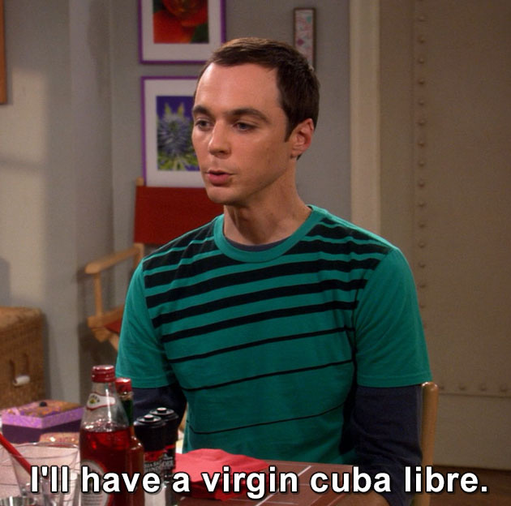

Virgin Cuba Libre

Description
This is one the most Chad drinks ever to come into existence. No
questions asked.
Go back
Ingredients
- A tall glass. Very important.
- Some ice cubes.
- One bottle of only the finest soda pop.
Steps
- Take the glass and place it firmly onto a desk surface.
- Fill the glass to roughly half of its height with ice cubes.
- Slowly pour the soda onto the frozen rocks to make surface
there isn't any development of fizz which would only increase
the waiting time for the finished drink.
- Enjoy your drink, fellow Chad.